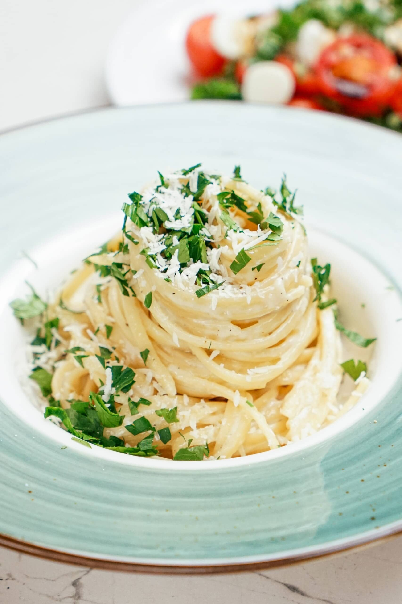

Home
Pasta

Description
Parmesan Garlic Linguine is a delicious and comforting pasta dish made with tender linguine noodles coated in a rich, creamy sauce. The sauce combines butter, fresh garlic, heavy cream, and freshly grated Parmesan cheese, creating a smooth texture and a savory, cheesy flavor with a subtle hint of garlic. Black pepper and salt enhance the taste, while fresh parsley adds a touch of color and freshness.
This easy Italian-inspired dish is perfect for a quick lunch or dinner, as it takes only about 15 minutes to prepare. The combination of creamy sauce and perfectly cooked pasta makes every bite satisfying, while the simple ingredients allow the Parmesan and garlic flavors to shine. Serve it hot with extra grated Parmesan and fresh parsley on top, alongside a crisp green salad or roasted vegetables for a complete and delicious meal.
Ingredients
- 1/2 pound linguine pasta
- 2 tablespoons salted butter
- 1/4 cup heavy cream
- 1/2 clove garlic finely minced (I used a microplane)
- lots of salt & pepper to taste
- 1/2 cup reserved cooking liquid from pasta
- 3/4 cup freshly grated parmigianno reggiano use the real stuff!
- fresh parsley for garnish (optional)
Steps
- Bring large pot of water up to boil. Sprinkle in a generous amount of salt and stir in pasta. Cook linguine until al dente and drain, reserving 1/2 cup cooking liquid.
- Place linguine back into hot pot and stir in butter, cream, garlic, salt, pepper and cheese until butter and cheese start to melt and create a sauce. Pour in some pasta water to get the sauce to the consistency you want. (I only used about 3 tablespoons.)
- Taste and adjust seasonings accordingly. Pour onto serving platter and top with fresh parsley and more grated cheese.